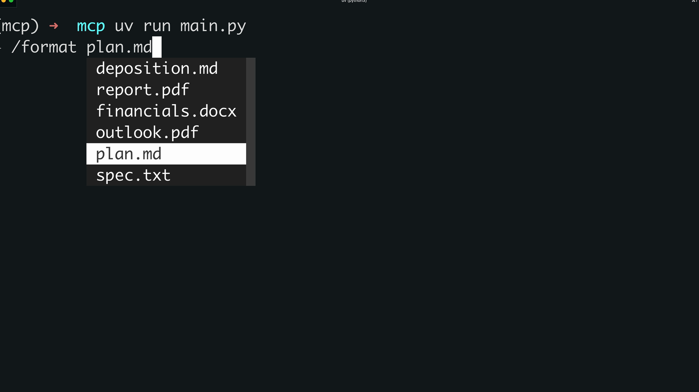
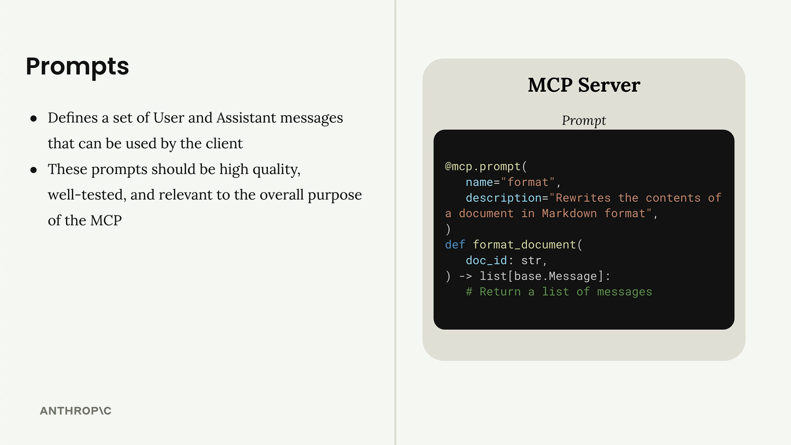

Промпты в клиенте
Чему научитесь
Видео 3:01 и текст урока
К концу урока вы сможете:
- реализовать в MCP-клиенте методы
list_promptsиget_prompt; - передавать аргументы, которые подставляются в шаблон промпта;
- запускать промпты сервера слэш-командами в CLI.
Видео и текст урока.
Смотреть урок на Skilljar Prompts in the client · 3:01Последний шаг в создании нашего MCP-клиента — поддержка промптов. Она позволяет получить список всех промптов, доступных на сервере, и запросить конкретный промпт с подставленными значениями переменных.
Реализация list_prompts
Метод list_prompts устроен просто: он вызывает у сессии функцию получения списка промптов и возвращает промпты:
async def list_prompts(self) -> list[types.Prompt]:
result = await self.session().list_prompts()
return result.prompts
Получение отдельного промпта
Метод get_prompt интереснее: он отвечает за подстановку переменных. Запрашивая промпт, вы передаёте аргументы, и они попадают в функцию промпта как именованные аргументы (keyword arguments):
async def get_prompt(self, prompt_name, args: dict[str, str]):
result = await self.session().get_prompt(prompt_name, args)
return result.messages
Например, если на сервере есть промпт format_document, который ожидает параметр doc_id, словарь аргументов будет содержать {"doc_id": "plan.md"}. Это значение подставится в шаблон промпта.
Проверка промптов в деле
После реализации промпты можно проверить в CLI. Когда вы вводите косую черту (/), доступные промпты появляются в виде команд. Если выбрать промпт, например «format», CLI предложит выбрать один из доступных документов.

/format: CLI предлагает выбрать документ.Когда документ выбран, система отправляет Claude готовый промпт целиком. Модель получает и инструкции по форматированию, и ID документа, а затем с помощью доступных инструментов читает содержимое документа и обрабатывает его.
Как работают промпты

@mcp.prompt и функция, которая возвращает список сообщений.Промпты задают набор сообщений пользователя и ассистента, которыми могут пользоваться клиенты. Они должны быть качественными, хорошо протестированными и соответствовать назначению вашего MCP-сервера. Порядок работы такой:
- напишите и оцените промпт, связанный с функциональностью вашего сервера;
- определите промпт на MCP-сервере с помощью декоратора
@mcp.prompt; - клиенты могут запросить промпт в любой момент;
- аргументы, переданные клиентом, становятся именованными аргументами функции промпта;
- функция возвращает оформленные сообщения, готовые для модели.
Так получаются многоразовые параметризованные промпты: они сохраняют единообразие и при этом настраиваются через переменные. Это особенно полезно в сложных сценариях, где нужно, чтобы модель каждый раз получала правильно выстроенные инструкции.
Дальше
В последнем уроке курса, «Обзор MCP», подведём итог: кто в приложении управляет инструментами, ресурсами и промптами.
Оригинал урока: Prompts in the client.